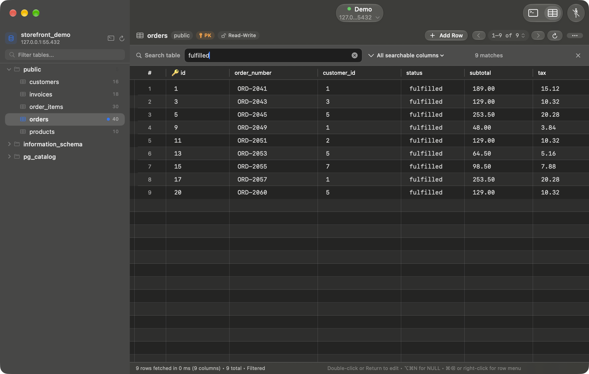
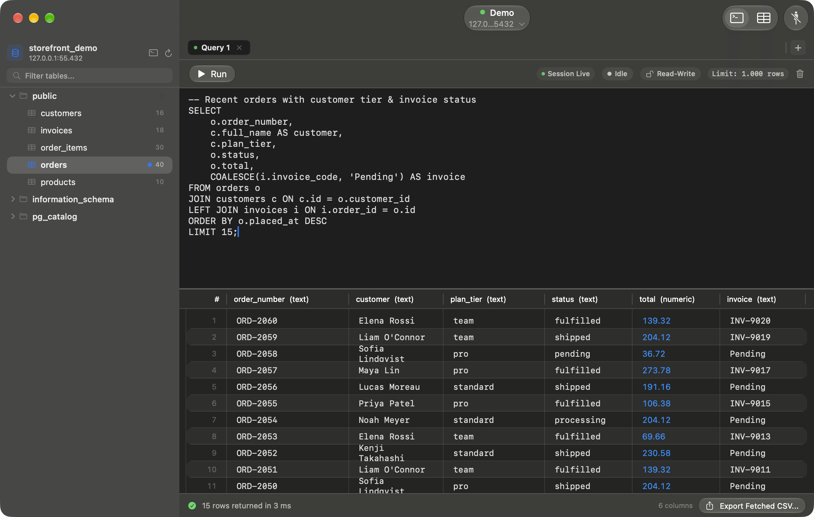

PostgreSQL at native macOS speed.
AppKit virtualized grid, dedicated SQL session tabs, and a Rust tokio-postgres engine, built for Apple Silicon with zero telemetry.

Stage edits locally. Guard every commit with xmin.
Type in the grid without holding open transactions. Review your diff and apply atomically. Stale rows roll back immediately while keeping your edits intact.
- ⌥⌘N NULL vs ""
- BEGIN READ ONLY
- Exact numerics
BEGIN;
UPDATE public.orders
SET status = 'fulfilled', note = NULL
WHERE id = $1 AND xmin = $2
RETURNING xmin;
-- 0 rows affected → ROLLBACK
COMMIT;One PostgreSQL session per SQL tab.
Run queries with ⌘↩ in an isolated connection so temp tables and SET search_path stay predictable, with live cancellation and close-tab rollback prompts.
- ⌘↩ Execute
- ⌘F Literal search
- REPEATABLE READ CSV

Download or build from source.
Signed development .dmg artifacts and .sha256 checksums are produced on GitHub Actions. Ad-hoc signed builds require Open Anyway in System Settings → Privacy & Security on first launch.
./scripts/build-rust-bridge.sh
./tests/bridge_smoke_test.sh
./scripts/run-app.sh